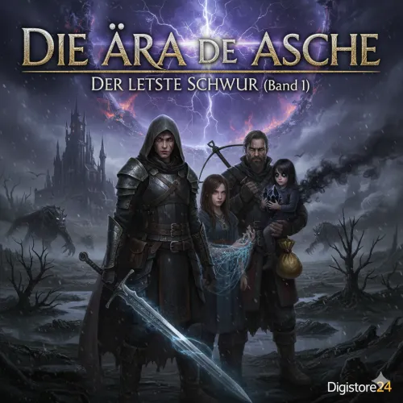
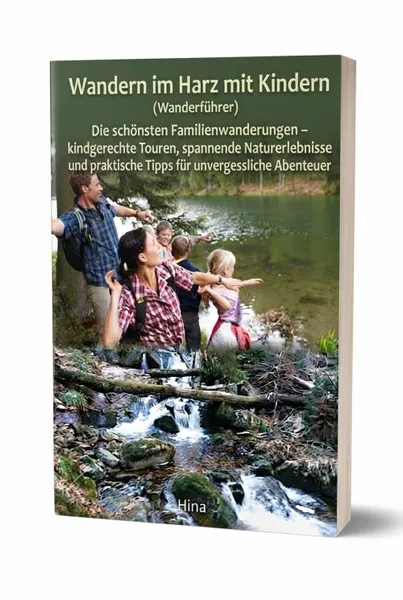

Die Ära der Asche - Epischer Fantasy-Bestseller für GoT-Fans
Produktprofil · Marktplatz-Daten 2026-10-13 · Verkaufsseiten-Recherche 2026-10-13 · Kategorien: Hobby & Craft
- Die Ära der Asche - Epischer Fantasy-Bestseller für GoT-Fans ist ein/e E-Book in Hobby & Craft, vertrieben über den Digistore24-Marktplatz von Anbieter Tits79, gelistet seit 2025-12-16.
- Listenpreis $11.07; Digistore24 meldet — Checkout-Konversion, — Stornierungsquote und 10 % Affiliate-Provision.
- Verdienst pro Verkauf (Affiliate): $1.11 (Anbieter-seitige Statistik, keine Prognose).
Interesse an Die Ära der Asche - Epischer Fantasy-Bestseller für GoT-Fans? Aktueller Preis, Boni und Garantiebedingungen finden Sie auf der offiziellen Seite des Anbieters:
Offizielle Verkaufsseite ansehen
Affiliate-Link (Werbung) — wir verdienen ggf. eine Provision, ohne Mehrkosten für Sie.

Marktplatz-Daten
| Produkttyp | E-Book |
|---|---|
| Preis | $11.07 (Single payment) |
| Affiliate-Provision | 10 % |
| Garantie/Rückgabe | Laut Verkaufsseite des Anbieters — vor dem Kauf auf der offiziellen Seite prüfen |
| Anbieter | Tits79 (gelistet seit 2025-12-16) |
| Marktplatz-Statistiken* | Checkout-Konversion — · Stornoquote — · Verdienst/Verkauf $1.11 |
* Anbieter-seitige Statistiken von Digistore24; sie hängen von der Traffic-Qualität ab und sind keine Prognose.
Marktplatz-Beschreibung des Anbieters
<p>Das Licht stirbt. Der Preis der Magie ist deine Seele.</p> <p>Suchen Sie ein Fantasy-Epos, das Leser nicht mehr loslässt? „Die Ära der Asche“ ist eine düstere High-Fantasy-Saga, die genau den Nerv der Zeit trifft. In einer Welt, in der die Sonne zerbrochen ist und Magie mit dem Verlust der eigenen Erinnerungen bezahlt wird, beginnt ein gnadenloser Kampf um das Überleben der Menschheit.</p> <p>Warum dieses Buch ein Bestseller-Potenzial hat:</p> <p>Targeting: Perfekt für die riesige Zielgruppe von Game of Thrones, The Witcher und Joe Abercrombie.</p> <p>Einzigartiges Magiesystem: Ein innovativer Ansatz – Magie gegen Erinnerung. Das sorgt für tiefgründige Charaktere und dramatische Wendungen.</p> <p>High-Quality Content: Professionell strukturiert mit packenden POV-Charakteren (Point of View), moralischen Grauzonen und politischer Tiefe.</p> <p>Inklusive Bonusmaterial: Käufer erhalten exklusiven Zugriff auf eine detaillierte Weltkarte und das Kompendium von Aethelgard.</p>
Von der Verkaufsseite des Anbieters
Seitentitel: Die Ära der Asche der letzte Schwur (Band 1) - Digistore24
Abschnitts-Überschriften
- Die Ära der Asche der letzte Schwur (Band 1)
- Die Ära der Asche der letzte Schwur (Band 1)
- Die Ära der Asche der letzte Schwur (Band 1)
Einstiegstext
Die Chroniken von Aerelin ist ein epischer Fantasy - Roman als digitales E - Book ( PDF )
Die Chroniken von Aerelin ist ein epischer Fantasy - Roman als digitales E - Book ( PDF )
Die Chroniken von Aerelin ist ein epischer Fantasy - Roman als digitales E - Book ( PDF )
Preisangaben auf der Seite: $10
Recherche-Methode: rohes HTML · 253 Wörter · Qualität: medium · recherchiert am 2026-10-13. Vollständige Recherche-Datei (MD) ↗
Wie Produkte dieser Art geliefert werden
Allgemeiner Hinweis zu diesem Produkttyp (keine anbieterspezifische Anleitung): E-Books auf Digistore24 werden als digitaler Download geliefert (meist PDF/EPUB): direkt nach dem Checkout erhalten Sie einen Downloadlink oder Mitgliederzugang und können auf jedem Gerät lesen. Für die genaue Anwendung von Die Ära der Asche - Epischer Fantasy-Bestseller für GoT-Fans sind die offizielle Verkaufsseite und die enthaltenen Materialien maßgeblich.
Gut zu wissen
- Keine Garantie-Formulierung in unserer Recherche gefunden — bestätigen Sie das Rückgabefenster auf der offiziellen Seite, bevor Sie kaufen.
- Marktplatz-Zahlen (Preis, Provision, Konversion, Stornoquote) — Quelle: offizielle Digistore24-Marktplatz-API (Affiliate-Sicht), Stand 2026-10-13. Gegenprüfung: Marktplatz-Suche nach Produkt-ID 655747.
- Verkaufsseiten-Zitate — Quelle: https://www.checkout-ds24.com/product/655747, abgerufen 2026-10-13 (Methode: rohes HTML). Verify: offizielle Seite öffnen.
- Garantie / Rückgabe — vom Anbieter festgelegt; vor dem Kauf auf der Verkaufsseite bestätigen.
- Nicht von uns geprüft: Produktqualität, Ergebnisse, Testimonials — kein Praxistest für dieses Listing durchgeführt.
Häufige Fragen zu Die Ära der Asche - Epischer Fantasy-Bestseller für GoT-Fans
Antworten aus dem Marktplatz-Snapshot (2026-10-13) und der Verkaufsseiten-Recherche (2026-10-13); Anbieteraussagen sind inline gekennzeichnet.
Was ist Die Ära der Asche - Epischer Fantasy-Bestseller für GoT-Fans?
Die Ära der Asche - Epischer Fantasy-Bestseller für GoT-Fans ist ein Angebot des Typs „E-Book" im Digistore24-Marktplatz, Anbieter: Tits79, gelistet seit 2025-12-16. Eingepflegt unter Hobby & Handwerk. Digistore24 wickelt Checkout, Lieferung und Rückgaben ab.
Wie viel kostet Die Ära der Asche - Epischer Fantasy-Bestseller für GoT-Fans?
Der Digistore24-Marktplatz listet es für $11.07 (single payment). Preise legt der Anbieter fest und können sich ändern — der Marktplatz-Eintrag oben zeigt den Schnappschuss; die offizielle Verkaufsseite zeigt den aktuellen Preis.
Gibt es eine Geld-zurück-Garantie für Die Ära der Asche - Epischer Fantasy-Bestseller für GoT-Fans?
Unsere Verkaufsseiten-Recherche hat keine explizite Garantie-Formulierung gefunden. Viele Digistore24-Produkte bieten 60 Tage Geld-zurück, aber das legt jeder Anbieter selbst fest — bestätigen Sie es auf der offiziellen Verkaufsseite, bevor Sie kaufen.
Ist Die Ära der Asche - Epischer Fantasy-Bestseller für GoT-Fans seriös?
Wir bewerten keine Seriosität — wir veröffentlichen überprüfbare Zahlen: Anbieter Tits79 (gelistet seit 2025-12-16), Checkout-Konversion —, Stornoquote —, Affiliate-Verdienst/Verkauf $1.11 (alles Anbieter-seitige Marktplatz-Statistiken). Lesen Sie unsere 6-Punkte-Bewertungsmethode und entscheiden Sie anhand der Zahlen — oder diskutieren Sie Die Ära der Asche - Epischer Fantasy-Bestseller für GoT-Fans auf GitHub.
Wo kann ich Die Ära der Asche - Epischer Fantasy-Bestseller für GoT-Fans sicher kaufen?
Nur über die offizielle Verkaufsseite, die auf dieser Seite verlinkt ist (Checkout und Rückgaben laufen über Digistore24). Prüfen Sie dort Preis und Garantie vor der Bestellung. Der Link ist ein Affiliate-Link — der Kauf unterstützt diese Website ohne Mehrkosten für Sie.
Wie erhalte ich Die Ära der Asche - Epischer Fantasy-Bestseller für GoT-Fans nach der Zahlung?
Der Checkout läuft über Digistore24: Nach der Zahlung erhalten Sie Ihren Zugang oder Download per E-Mail und in Ihrem Digistore24-Kundenkonto. Lieferdetails für diesen Produkttyp: E-Books auf Digistore24 werden als digitaler Download geliefert (meist PDF/EPUB): direkt nach dem Checkout erhalten Sie einen Downloadlink oder Mitgliederzugang und können auf jedem Gerät lesen. Bei Problemen kann der Digistore24-Käufersupport Ihre Bestellung wiederherstellen.
Alle 50 Käuferfragen zu Hobby & Handwerk — das komplette Kategorie-FAQ.
Die Ära der Asche - Epischer Fantasy-Bestseller für GoT-Fans auf Reddit diskutieren
In Community-Threads vergleichen echte Käufer Erfahrungen. Wir verlinken Communities, keine einzelnen Posts — Threads verschwinden, Subreddits bleiben:
- Reddit-Suche nach „Die Ära der Asche - Epischer Fantasy-Bestseller für GoT-Fans" — Live-Ergebnisse, von uns nicht beeinflusst.
- Top-„Erfahrungs"-Treffer dieses Jahr — selbst nach Aktualität filtern.
Passendes auf Amazon.de
Physische Produkte und Zubehör, die häufig zusammen mit Die Ära der Asche - Epischer Fantasy-Bestseller für GoT-Fans gekauft werden:
- Hobby & Craft auf Amazon.de — Top-Ergebnisse, Amazon-Ranking.
- Bestseller: Hobby & Craft — live Liste von Amazon, von uns nicht kuratiert.
Werbung: Als Amazon-Partner verdient DigistorePicks DE an qualifizierten Käufen (Partner-tag adminstorede-21). Amazon setzt eigene Preise und Provisionen (niedrige einstellige Prozente — weit unter den 30–75% der Digistore24-Anbieter). Amazon ist ein Convenience-Angebot für Sachprodukte, kein Ersatz für das digitale Produkt oben.
Ähnliche Angebote in Hobby & Handwerk

<p><strong>VoxelPrint Pro</strong> ist ein professionelles <strong>WordPress- & WooCommerce-Plugin</strong>, das deinen Sh
<blockquote> <blockquote> <p>Verdien 190 Euro netto pro Sale in der unentdecktesten Nische des Jahres!</p> <p>Bist du genervt von

<p><strong>Unser Produkt: Online-Zeichenkurs „Vom Anfänger zum Meister“</strong></p> <p>Ein umfassender, praxisorientierter Online

<p>Lass uns auf die Reise gehen und erlebe wie leicht das Klavierspielen sein kann - mit dem <strong><a>Piano.University Intuinauten-Programm&
Ähnliche Preislage in Hobby & Handwerk

<h2><strong>Wandern auf Gran Canaria für Anfänger</strong></h2> <p>Entdecken Sie die schönsten Routen abseits des Massentourismus.
<h2>Wandern auf Lanzarote für Anfänger</h2> <p>Entdecke die faszinierende Vulkaninsel von ihrer schönsten Seite! Unser neuer E-Book-Bestseller

<h2><strong>Wandern im Harz mit Kindern – Der ultimative Familien-Guide</strong></h2> <p>Machen Sie Familien mit Kindern den Harz

<h2><strong>Wandern im Schwarzwald mit Kindern</strong></h2> <p><strong> • Preis:</strong> 12,99 € | <strong>Pro
Ähnliche Suchanfragen
Wo Sie es sich ansehen können
Wo Sie es sich ansehen können
Aktuelle Preise, Garantie und Boni finden Sie auf der offiziellen Verkaufsseite:
Offizielle Verkaufsseite ansehen
Das ist ein Affiliate-Link (Werbung) — kaufen Sie darüber, verdienen wir ggf. eine Provision, ohne Mehrkosten für Sie.
Quellen & weiterführende Informationen
- Offizielle Verkaufsseite (aktueller Preis, Garantie, Boni): www.checkout-ds24.com/product/655747 (Affiliate-Link)
- Öffentliche Digistore24-Produktseite: digistore24.com/product/655747
- Vollständige Recherche-Datei (Markdown, versioniert): content/products/54954-die-ra-der-asche-epischer-fantasy-bestseller-f-r-got-fans.md
- Marktplatz-Kategorie: Hobby & Handwerk
Wie wir Produkte wie Die Ära der Asche - Epischer Fantasy-Bestseller für GoT-Fans bewerten
Sechs Prüfungen, ausschließlich mit offiziellen Marktplatz-Zahlen. Die vollständige Bewertungsmethode lesen · unsere Recherche-Standards & Kennzeichnung.
Fragen oder eigene Erfahrungen mit Die Ära der Asche - Epischer Fantasy-Bestseller für GoT-Fans?
Praxis-Tests veröffentlichen wir erst, nachdem wir ein Produkt selbst gekauft haben — aber Ihre Erfahrung hilft anderen Lesern: Diskussion zu Die Ära der Asche - Epischer Fantasy-Bestseller für GoT-Fans auf GitHub starten/verfolgen. Falsche Zahl gefunden? Korrektur melden — jede Seite zeigt ihre Datenstände, Korrekturen gelten für die ganze Website.